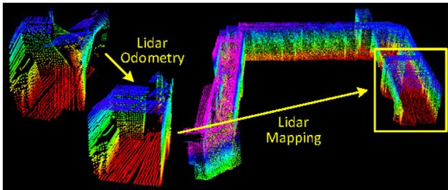
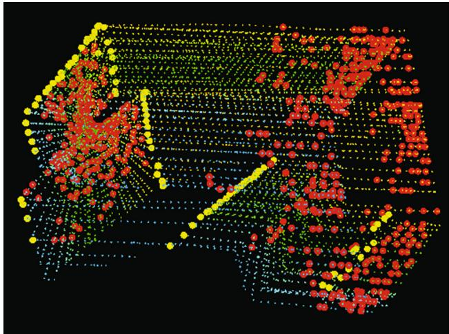
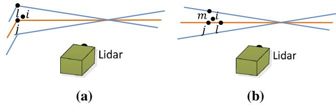
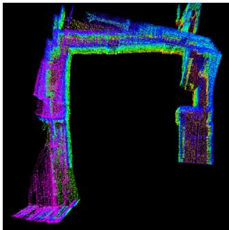

阶段 D · 激光主干 / Lesson 0074
LOAM（2017）：激光 SLAM 的分水岭
十年来几乎所有激光 SLAM 系统，都站在这篇论文搭好的骨架上 📐
🎯 主题：两步优化 · 特征提取 · 运动畸变补偿
👥 作者：Ji Zhang、Sanjiv Singh（CMU）
📅 2017 · Low-drift and real-time lidar odometry and mapping
本节目标
读完你应该能：说清 LOAM 的两层结构各在干什么；解释运动畸变为什么会发生；写出点到线与点到面的残差；并知道它留给后人的最大一个问题是什么。
和前面课程怎么接
直接接第一季 0008 课（那时我们只是在横评里见过 LOAM 的 scan-to-map）与 0006 课（第一次提到 ikd-Tree 的悬念）；本篇的「点到面残差」与第二季 0022 课同宗。
1. 为什么「扫描对扫描」不行
先建立问题。激光 SLAM 最朴素的做法是：把当前这一帧点云，和上一帧点云对齐，算出这两帧之间我动了多少。 然后一帧一帧地累加下去。
这个做法叫 scan-to-scan 。它有两个致命伤，而且这两个伤是同源的 。
致命伤一：一帧点云不是「一张照片」
相机按下快门，画面是同一瞬间 的。但机械旋转激光雷达转一圈要 0.1 秒——这 0.1 秒里，车一直在往前开。于是同一帧里，最早采到的点与最晚采到的点，来自两个不同的车位置 。你不处理这一层，这帧点云就是一个「时空被揉在一起」的东西。
致命伤二：误差会累积并被放大
scan-to-scan 每次都只用一个很短的时间间隔（0.1 秒）来估运动。原文的说法是：这样估出来的运动本身就低估 ，而且估错的那一点点会被下一帧继承，越滚越大。这就是常说的漂移 。
LOAM 的全部智慧，就是用一个结构同时解决这两个问题 。而这个结构只有一句话：
LOAM 的核心主张
把「估计运动」和「精修地图」拆成两个并行算法 ，用不同的频率跑：里程计 （lidar odometry）跑得快但粗 ——高频输出速度，顺便把运动畸变去掉；建图 （lidar mapping）跑得慢但精 ——把累积的点云和地图做精细配准，输出高精度位姿。
原文给出的频率是：里程计约 10 Hz，建图 1 Hz ——正好差一个数量级。为什么这么分工？原文的解释非常朴素：
「激光里程计只关心速度……以及运动畸变的去除。之后，激光建图只需要考虑刚体变换来做精确的扫描匹配。」
翻译成大白话：先把容易的问题解掉（我现在跑多快、往哪跑），再拿这个结果去做那个难的问题（我和地图到底对不对得上）。 不要在还没搞清楚「我在动」的时候，就去追求「我和地图严丝合缝」。

原图注（Fig. 1）： The method aims at motion estimation and mapping using a moving 3D lidar. Point clouds are formed as the sensor rotate. Distortion is present due to the sensor motion. It decomposes the problem by two algorithms running in parallel.怎么看这张图： 这是全篇的总纲。请重点看它把一整套 SLAM 切成了哪两块，以及这两块之间箭头怎么走——上图是「里程计」，下图是「建图」，中间有信息互相传递 。先记住这个形状，下面三节都在展开它。
2. 运动畸变怎么补
先把「运动畸变」这件事看清楚。它其实是一个很直观的现象。
想象你站在一条笔直的走廊中间，手持一台旋转激光雷达。你站着不动 转一圈，量到的两侧墙面是笔直的两条线 。现在你边走边转 ——因为你转了 0.1 秒才转完一圈，这 0.1 秒里你往前挪了 1 米，所以「扫到墙的左边那一段」和「扫到墙的右边那一段」时，你人在两个不同的位置。
如果你不处理，把这一圈点都当成「站在起点时测的」，那么笔直的墙在点云里就会被拉成一条弧线或斜线 。
运动畸变：为什么「一条直线」会被扫成「一条弧」
① 真实世界（俯视）
一条笔直的走廊
墙
墙
起点
终点
边走边转
一圈
0.1 秒
墙是直的，车在动
② 不校正：直接叠在一起
当作「都在起点测的」
墙被拉成了弧线
走廊不再笔直
③ 校正：按时间戳搬回去
每台点搬回它被采到的那一刻
又变回直的
又变回直的
前提：这一帧里
速度是匀速的
走廊恢复笔直
这张图在画什么： 同一个走廊、同一帧点云，在「不处理」与「按时间戳搬回去」两种做法下，分别长什么样。怎么看这张图： ① 左格是真实世界——墙是两条平行直线 ，车从「起点」开到「终点」，同时转了一圈；② 中格（红色点）是不校正 的结果：把这一圈所有点都当成「站在起点测的」，于是直线被拉弯了；③ 右格（绿色）是校正后 ：把每个点按它自己的时间戳，搬回它被测到的那个时刻所对应的车位置，墙又变直了。要记住的一句话： 去畸变（deskew）不是「修点云」，而是把每个点送回它该在的那个坐标系 ——而要做到这一点，你必须先知道「这段时间里车是怎么动的」。
那么问题来了：「这段时间里车是怎么动的」，你本来就是要估计的呀？ 这不就成了鸡生蛋了吗？
LOAM 的回答是：用一个假设换一个起点。 它假设在一个扫描周期（0.1 秒）内，车做的是匀速运动 ——角速度和线速度都不变。有了这个假设，只要知道「这一圈开始时的位姿」与「开始时的速度」，就能按时间比例线性插值 算出每个时刻的位姿：
其中 $T_{(k,i)}^{L}$ 表示「第 $k$ 个扫描里、第 $i$ 个点被采到的那一刻」的变换，$t_{(k,i)}$ 是那个点的时间戳，$t_k$ 是本圈开始时间。整式的意思是：按「这个点在本圈里的时间进度」，把它对应的变换按比例缩放一下。
这是个很实用的近似：它不要求匀速运动假设在整个轨迹上成立，只要求它在 0.1 秒内成立。 原文也明确说了它的边界——如果角速度或线速度变化剧烈，这个假设就不够了，那时就需要 IMU 来帮忙（原文的实测里，楼梯场景不加 IMU 误差 2.1%–4.4%，加了 IMU 降到 0.9%–2.6%）。
互动判断
LOAM 去畸变时假设「一帧 0.1 秒内速度恒定」。如果一辆车在这 0.1 秒内急刹车 （速度从 10 m/s 掉到 5 m/s），这个假设会带来什么后果？
程序会直接报错退出
后半段的点放错了位置
下一帧的畸变会翻倍
3. 两类特征：只留角点和平面点
现在到 LOAM 最出名的那一步：它不把整帧点云都拿去配准，只挑两类点。
这两类点是：
边缘点（edge points）
落在一条棱 上的点。比如墙角、桌沿、门框边。它们的特点是：周围邻居点离得很散 ——因为一条线在空间里只占一个方向，其它方向没东西。
配准时它们去找上一帧里的一条边缘线 。
平面点（planar points）
落在一个面 上的点。比如墙面、地面、桌面。它们的特点是：邻居点排得很整齐 ——都贴着同一个平面。
配准时它们去找上一帧里的一块平面片 。
怎么自动判断一个点属于哪一类？原文用了一个叫曲率 （也叫平滑度）的量：
别被符号吓到，它做的事情很朴素：拿一个点，和它同一根扫描线上的前后几个邻居比一比，看差距有多大。
$X_{(k,i)}^{L}$ 是当前这个点，$X_{(k,j)}^{L}$ 是它邻域 $S$ 里的其它点；
括号里是「这个点减掉邻居」，把所有邻居的这些差加起来（向量和）；
除以 $|S|$ 是取平均，除以 $\|X_{(k,i)}^{L}\|$（它到雷达中心的距离）是为了去掉「远处点天然看着更散」这个尺度影响 ——这一项很关键，否则远处的墙也会被误判成边缘；
最后取模长。结果就是 $c$。
怎么读这个数： $c$ 小 → 邻居点都贴在一条平滑的面上 → 平面点 ；$c$ 大 → 邻居点散开、附近有一条棱 → 边缘点 。原文用的分界阈值是 $c > 5\times10^{-3}$ 算边缘候选，$c < 5\times10^{-3}$ 算平面候选。
还有一个必须提的工程细节：它不会把一帧里所有满足条件的点都要。 原文的做法是——每根扫描线切成 4 个子区域 ，每个子区域最多 取 2 个边缘点 + 4 个平面点 。这是为了让特征点在视野里分布均匀 ，而不是挤在某一面墙上。到建图那一步，它用的特征数量还要再放大 10 倍 。

原图注（Fig. 5）： The extracted edge points (yellow) and planar points (red) from the lidar cloud taken in a corridor. Note that the motion distortion on the wall.怎么看这张图： ① 先找黄色的点 ——它们集中在哪里？（答：墙与墙交汇的棱线上）；② 再看红色的点 ——它们铺在哪里？（答：平整的墙面上）；③ 最后注意图注自己提醒的那件事：墙面有明显的运动畸变 ——这正是上一节讲的问题，而且它是在这一帧原始数据里就能看出 的。
4. 点到线、点到面：两种残差
挑出特征点之后，下一步是「把它们配起来」。这里有个很关键的思路：不要去上一帧里找「对应的那个点」，而是找「对应的那条线/那个面」。
为什么？因为激光点每次采样位置都在变，你几乎不可能两次打中同一个物理点。但「落在同一条棱上」「落在同一个平面上」这件事是稳定的 。所以 LOAM 让一个点去找几何基元 ，而不是找另一个点。这正是第一季 0004 课讲过的「landmark 地图 vs 几何地图」在激光侧的体现。

原图注（Fig. 7）： Finding an edge line as the correspondence for an edge point (left) and a planar patch as the correspondence for a planar point (right).怎么看这张图： ① 左图里，点 $i$ 要去配的是「过 $j$、$l$ 两点的那条线」 ——所以只要在上一帧里找到最近的两个点 $j$ 和 $l$ 就够了（两点定一条线）；② 右图里，点 $i$ 要去配的是「过 $j$、$l$、$m$ 三点的那块平面」 ——所以要找最近的三个不共线点；③ 注意 $j$、$l$、$m$ 都来自上一帧的地图 ，不是当前帧。
有了「点 + 线」或「点 + 面」，残差就很好定义了：
这两个式子的几何含义 其实很简单：
点到线：平行四边形的高
$(\tilde X_i-\bar X_j)$ 与 $(\tilde X_i-\bar X_l)$ 是两个向量，它们的叉积的模 等于「这两个向量张成的平行四边形的面积」。再除以底边长 $|\bar X_j-\bar X_l|$，得到的就是平行四边形的高 ——而那个高，正好就是点 $i$ 到直线 $jl$ 的垂直距离 。
点到面：体积除以底面积
$(\bar X_l-\bar X_j)\times(\bar X_m-\bar X_j)$ 是平面的法向量 （方向垂直于平面，模长等于底面平行四边形的面积）。让 $(\tilde X_i-\bar X_j)$ 与它点乘，得到的是平行六面体的体积 ；再除以法向量的模（底面积），剩下的就是高 ——即点 $i$ 到平面的垂直距离。
所以这两条残差本质上都是同一件事：一个点到一条线/一个面的垂直距离 ；我们的目标就是让这个距离尽量小。这也是为什么第二季 0022 课（点云 BA）里讲「点到面残差」时，你会觉得很眼熟——它是同一族东西。
把所有边缘点与平面点的残差堆在一起，就得到一个非线性最小二乘问题，用 Levenberg–Marquardt 求解：
工程上还有个细节值得知道：离群点会被自动踢掉。 原文用 bisquare 权重函数给每个残差配一个权重——残差小的时候权重接近 1，残差大到一定程度后权重直接归 0。这就是第二季 0019 课讲过的「鲁棒核」在激光侧的具体形式。
5. 两步优化：一快一慢，一粗一精
现在把前面所有零件装起来，看 LOAM 的整体结构。
回到最开始的悬念：既然去畸变要先知道「车怎么动」，而估计「车怎么动」又依赖去畸变后的点云，那到底谁先？
LOAM 的答案是用两层互相喂 ：
里程计：拿当前帧 配 上一帧 → 得到速度与粗略位姿 → 顺便去畸变 去畸变后的累积点云 配 地图 → 得到精细位姿 → 回灌修正里程计
两者的分工可以列成一张表：
激光里程计
激光建图
频率 约 10 Hz
1 Hz
拿什么配什么 当前帧 ↔ 上一帧
累积点云 ↔ 地图
特征数量 基准量
约 10 倍
主要产出 速度 + 去畸变后的帧
高精度位姿
典型耗时 建树 11–18 ms、提特征 23–35 ms
建树 58–131 ms、提特征 134–283 ms
最后一行很关键：建图那一层的耗时大约是里程计的 6.4 倍。 如果让建图也跑 10 Hz，就完全做不到了——这就是「差一个数量级的频率」这个设计的经济学依据。
两步优化：同一辆车，两条不同频率的流水线
车在走
时间
激光里程计 · 约 10 Hz（快而粗）
每 0.1 秒出一个速度估计：密、抖
作用：把这一帧的运动畸变去掉
激光建图 · 1 Hz（慢而精）
配准
配准
配准
…
每 1 秒把累积点云与地图精配准一次：疏、稳
用它修里程计
精配准的结果
回头修正里程计
频率为什么差 10 倍：建图那一步的总耗时约是里程计的 6.4 倍
先解容易的（我在跑多快），再解难的（我和地图对不对得上）
这张图在画什么： LOAM 的两层结构在同一根时间轴上的样子。上面那条是你的「快速反应」层，下面那条是你的「精雕细琢」层。怎么看这张图： ① 先比两条泳道里的标记密度 ——上面的点密（10 Hz）、下面的方块疏（1 Hz）；② 看上面的折线为什么是抖动 的——因为里程计只求快、不求准，它的输出是「带噪声的速度估计」；③ 看右边那根虚线回灌箭头 ——建图的精配准结果会回头去修正里程计的位姿，这是两层之间唯一的反馈；④ 最下面那行是关键：频率差 10 倍不是随意的偏好，而是算力逼出来的 。要记住的一句话： 「先跑得快但粗，再跑得慢但准，然后让慢的回头修快的」——这个结构之后被几乎所有激光惯性系统继承，只是「慢的那一层」从配准换成了因子图优化。
6. 顺手埋一个伏笔：那棵 k-d 树
这一节讲一个看起来很不起眼、但会在第 0084 课还债 的细节。
配准需要「找最近的点」。比如一个边缘点，要去找上一帧里离它最近的两个点。这种「最近邻查询」在点云上无法暴力遍历（十几万个点，每个都遍历一遍就是十几万倍），所以要用空间索引——LOAM 用的是 k-d 树 。
那么，这棵树什么时候建？
一个重要的澄清
LOAM 不是「每次迭代重建 k-d 树」。 它的做法是：里程计 里，把上一帧 的点云存进一棵 k-d 树——这棵树在一整个扫描周期内不变 ；建图 里，把地图按 10 m 的立方体切块 ，取出与当前帧相交的那些块建一棵 k-d 树——建图每个扫描周期才跑一次，所以这棵树也是每个扫描周期建一次 。不重建树 。
所以 LOAM 已经避开了「每次迭代重建」这种明显的浪费。但它仍然留下了一个更大的开销：建图那一步，每个扫描周期都要对（可能很大的）地图重新建一次 k-d 树。
原文把这些开销老老实实列在了表里：建图阶段建 k-d 树要 58–131 ms，提特征要 134–283 ms ——也就是说，每秒钟里有一大块时间花在「重建索引」上。
为什么这是个问题？因为地图会一直长大 。车开得越远，地图越大，重建这棵树就越慢。这就构成了一个天花板：你没法在很大的场景里长时间实时运行。
互动判断
这条「每秒钟重建一次地图 k-d 树」的开销，在地图变大时会怎么变化？
基本保持不变
随地图规模增长
随行驶距离变小
记住这个问题。它从第一季 0006 课就被提起，在第二季 0022 课被明确推迟，第三季 0023 课又把它立了一遍——到第 0084 课才正面回答。 在那之前，我们会先看到好几篇「在别的方向上努力」的工作。
7. 结果与边界
先看效果。LOAM 在 KITTI 数据集上的平均相对位置误差是 0.88% ——在当时的纯激光方法里排第一。这个数字放在今天看依然不差。
更有说服力的是两个自采实验：
Velodyne HDL-32E，校园路线 1.0 km，车速 2–3 m/s ：水平误差不超过 1 m、垂直误差 1.5 m，总误差 0.2% ；街道路线 3.6 km，车速 11–18 m/s （这是相当快的速度）：水平误差约 2 m。
注意后面这个：在 3.6 公里、时速 40–65 公里的情况下，误差只有 2 米左右 ，而且这是在没有回环、没有 GPS、只用激光的情况下做到的。这就是为什么它被称为「分水岭」。

原图注（Fig. 12）： Comparison between (a) a lidar odometry output and (b) final lidar mapping output. The lidar odometry has a low fidelity. The lidar mapping further performs careful scan matching.怎么看这张图： 这是对「两步分工」最直接的可视化验证。① 看左边 (a)——那是里程计直接给出的结果，能看出边缘发虚、局部有重影 ；② 看右边 (b)——那是建图精配准之后的结果，线条明显更锐利 ；③ 注意两边的差别不是「有没有建出地图」，而是同一份数据被对齐得有多准 ：这就是「低频高精度」换来的东西。
原文承认的边界（逐条）
① 没有回环
原文把「加回环」明确写进了未来工作。所以它跑得再远，也存在累积漂移——只是在 KITTI 那种规模下漂得很少。
② 假设速度平滑连续
如果角速度或线速度变化剧烈，匀速假设就不成立，需要 IMU 介入（原文给了楼梯场景的实测：不加 IMU 误差 2.1%–4.4%，加 IMU 降到 0.9%–2.6%）。
③ 频率比 10 是折中
原文明确说这个比例是偏好：再高一点漂移会变大，再低一点更费算力；而且每次建图完成会引入一次位姿「跳变」。
④ 特征稀少的环境更差
在建图阶段，自然与室外环境中特征稀少时，匹配精度不如人造环境 ——因为墙角、门框这类「人造特征」本来就少。
这四条里，第 ① 与第 ② 直接定义了后面十年的研究方向：加回环 （0092–0093 课）与把 IMU 拉进优化 （0077 课起）。
课后练习
请用自己的话解释：为什么 LOAM 要把问题拆成「里程计」与「建图」两层，而不是直接做一次全局优化？
展开查看答案
核心原因是两件事的难度和可承受的时间尺度不同 。
① 里程计要解决的问题相对简单 ：只需要估计「这一小段时间里我动了多少」，而且它的输入（当前帧 vs 上一帧）时间间隔很短、差异小，所以容易做快。它的副产品是「把运动畸变去掉」——这一步一旦做完，后续的所有配准都变得更干净。
② 建图要解决的问题难得多 ：它要把累积了好几帧的点云与一张不断长大的地图做精确配准。原文的耗时表显示，建图那一步的总耗时约是里程计的 6.4 倍 。如果强行让建图也跑 10 Hz，就完全做不到了。
③ 所以拆层的逻辑是：先解容易的（我在跑多快），用它把数据清洗干净；再解难的（我和地图对不对得上），允许它慢一点。 这样两层各自的频率都能落在算力允许的范围内，而整体精度由「慢的那一层」保证。
「去畸变」这件事需要先知道「车怎么动」，而「车怎么动」本来就是要估计的。LOAM 是怎么跳出这个循环的？
展开查看答案
它引入了一个额外假设 来打破循环：在一个扫描周期（约 0.1 秒）内，角速度与线速度都恒定。
有了这个假设，问题就变了：不再需要知道「每个时刻的真实速度」，而只需要知道「本圈开始时的位姿」和一个分段恒定的速度 。于是它可以用线性插值 按时间比例算出任意时刻的变换：
按时间进度缩放本圈的总体变换
关键在于这个假设的适用范围很窄 ——只要求 0.1 秒内成立，而不是整条轨迹上成立。所以它大多数时候好用。原文也诚实地指出了它的失效条件：运动剧烈变化时（比如急刹、急转），这个假设就不够了，需要 IMU 来提供更真实的速度信息。
LOAM 用「点到线」与「点到面」两种残差。请分别写出它们的表达式，并解释式子里的叉积 与点乘 分别在几何上对应什么。
展开查看答案
点到线： 分子是 $|(\tilde X_i-\bar X_j)\times(\tilde X_i-\bar X_l)|$，分母是 $|\bar X_j-\bar X_l|$。
叉积的模长 = 两个向量张成的平行四边形面积 ；再除以底边长度，结果就是平行四边形的高 ——也就是点到直线的垂直距离。所以叉积在这里扮演的角色是「造出一个面积」。
点到面： 分子是 $|(\tilde X_i-\bar X_j)\cdot((\bar X_l-\bar X_j)\times(\bar X_m-\bar X_j))|$，分母是 $|(\bar X_l-\bar X_j)\times(\bar X_m-\bar X_j)|$。
这里先对两个向量取叉积，得到平面的法向量 （模长等于底面面积）；再把它与第三个向量点乘 ，得到的是平行六面体的体积 ；除以底面积，剩下的就是高 ——即点到平面的垂直距离。所以点乘在这里扮演的角色是「把长度投影到法向上」。
一句话总结：叉积负责「造面积/造法向」，点乘负责「量投影」；两者搭配起来，就能用一个式子同时表达「距离」而这个距离对旋转平移都不变。
LOAM 每秒钟要对地图重建一次 k-d 树。为什么这是一个「天花板」？请说明它限制了什么。
展开查看答案
因为建树的代价正比于地图里的点数，而地图点数正比于已经走过的距离 。
于是出现了一个恶性循环：跑得越远 → 地图越大 → 建树越慢 → 每秒钟花在「重建索引」上的时间越多。当这个时间超过 1 秒时，建图那一层的频率就掉到 1 Hz 以下，整个系统的实时性就崩了。
它限制的是「场景规模 × 运行时长」 ：在一个小房间里跑十分钟没问题，但在一条几公里的隧道里跑一小时就会撑不住。原文的实测里，建图阶段建树要 58–131 ms，这已经是个不小的开销了。
更要紧的是：这个瓶颈不是靠换更好的配准算法能解决的 ——它是数据结构问题。所以后面才有 FAST-LIO2 的 ikd-Tree（不再每次重建整棵树）与 Faster-LIO 的 iVox（干脆不用树）。